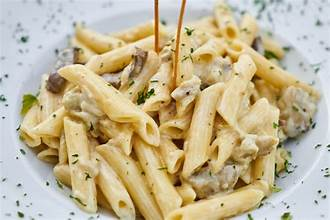

Delicious Pasta Recipe
A classic and comforting pasta dish, loaded with flavorful ingredients and a rich tomato sauce.

Ingredients
- 250g pasta (e.g., penne or spaghetti)
- 2 tablespoons olive oil
- 1 onion, finely chopped
- 2 cloves garlic, minced
- 400g canned diced tomatoes
- 1 teaspoon dried oregano
- 1 teaspoon dried basil
- Salt and pepper to taste
- Grated Parmesan cheese for serving (optional)
Method
- Bring a large pot of salted water to a boil. Cook the pasta according to package instructions until al dente. Drain and set aside.
- In a large skillet, heat olive oil over medium heat. Add the chopped onion and cook until softened, about 5 minutes.
- Add minced garlic to the skillet and cook for another minute until fragrant.
- Stir in the canned diced tomatoes, dried oregano, and dried basil. Season with salt and pepper to taste. Simmer the sauce for about 10-15 minutes, stirring occasionally.
- Add the cooked pasta to the skillet with the tomato sauce. Toss everything together until the pasta is well coated with the sauce.
- Remove from heat and serve the pasta hot. Garnish with grated Parmesan cheese if desired.
Images
